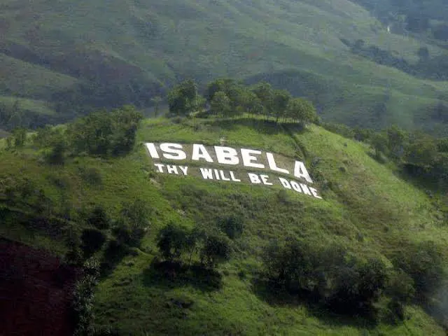
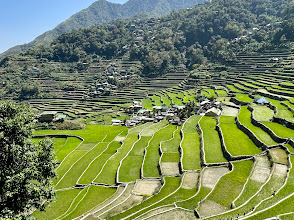
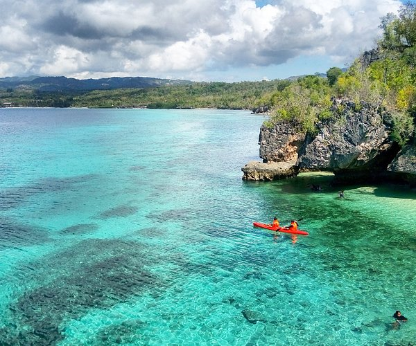
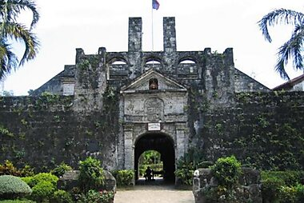
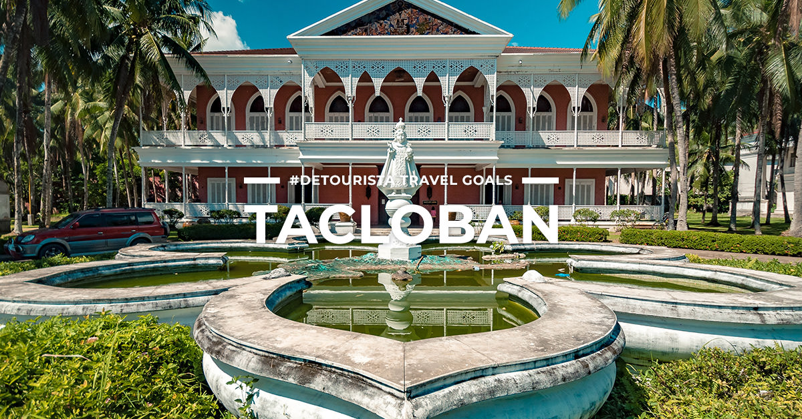

TOURIST DESTINATION
| HOME | PLACES | FOOD |
|---|
LUZON
 Mayon volcano Mayon is arguably the most symmetrical volcanic cone on Earth. Its steep upper slopes average 35 to 40 degrees and are capped by a small, frequently steaming summit crater. |
 isabela is the second-largest province in the Philippines, located in the Cagayan Valley of northern Luzon. Known as the "Queen Province of the North", it is the country's top corn producer and a major rice supplier, featuring a diverse landscape that ranges from fertile river valleys to the Sierra Madre mountain range and Pacific coastlines. |
 bulalo The defining feature of bulalo is the bone marrow. The marrow is often scooped out or "sucked" directly from the bone, while the beef shank meat becomes incredibly tender. |
 Bagnet Bagnet is a beloved Filipino delicacy from the Ilocos region. It consists of pork belly boiled with spices until tender, dried thoroughly, and deep-fried until the skin blisters and turns shatteringly crisp. Similar to lechon kawali, it is prized for its crunch and juicy meat. |
 batad rice Unlike many other terraces in the region that use mud, the steps in Batad are reinforced with large, precisely laid river stones, some towering up to 4 meters high Batad Rice Terraces - Banaue, Ifugao, Philippines. |
VISAYAS
 Chocolate hills The Chocolate Hills are a geological marvel in Bohol, Philippines, consisting of 1,260 to 1,776 perfectly symmetrical, cone-shaped limestone mounds spread over 50 square kilometers. Covered in green grass, the hills turn a distinct cocoa-brown during the dry season, creating the landscape that gives the attraction its famous name. |
 boracay located about 300 km south of Manila off the northwest coast of Panay. Famous for its 4-kilometer stretch of powdery white sand known as White Beach, it offers crystal-clear waters, vibrant nightlife, and a wide array of water sports. |
 central Central Visayas (Region VII) is a major administrative region in the Philippines located in the heart of the Visayas island group. It serves as a vital economic, industrial, and tourism hub, anchored by the highly urbanized Metro Cebu area, which includes Cebu City, Lapu-Lapu, and Mandaue. |
 cruz Magellan’s Cross is a historic Christian landmark in Cebu City, Philippines, planted by Portuguese and Spanish explorers on March 1521 to mark the birth of Christianity in the country. The original cross is enclosed inside a protective wooden tindalo cross to preserve its surviving fragments. |
 tacloban Tacloban played a crucial historical role as it served as the temporary capital of the Philippines in 1944 following the return of U.S. General Douglas MacArthur and the liberation of the islands. |